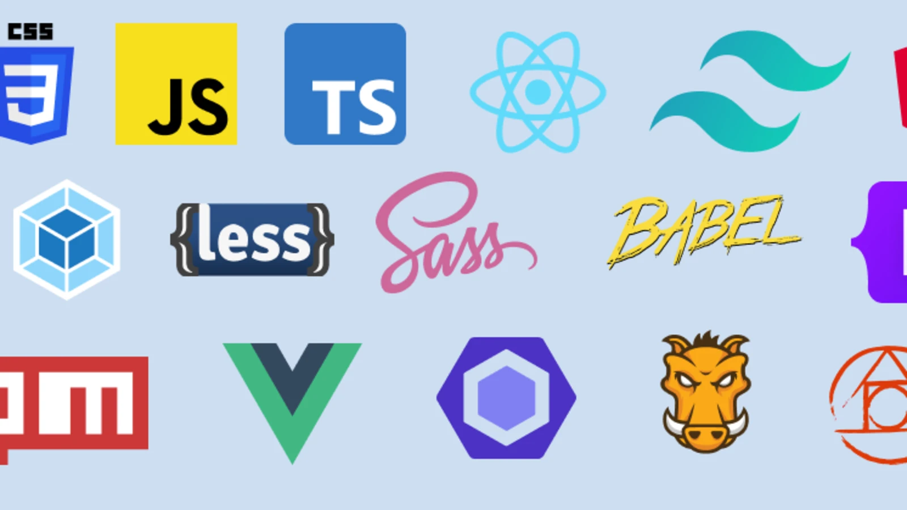

Explore
Notifications
Messages
Bookmarks
Lists
Profile
Tuit
Reply
Tuiter
Profile
Web Dev
@Web DevHi, I'm a web developer passionate about creating engaging and dynamic experiences on the internet. I love designing and building interactive websites and web applications that provide value to users. From crafting intuitive user interfaces to implementing robust backend functionality, I enjoy every aspect of the web development process.
Joined August 2021
123 Followings 234 Followers